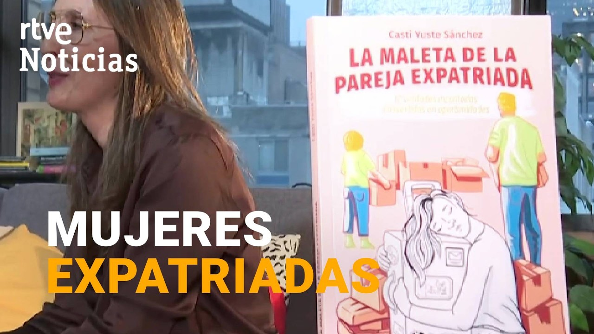
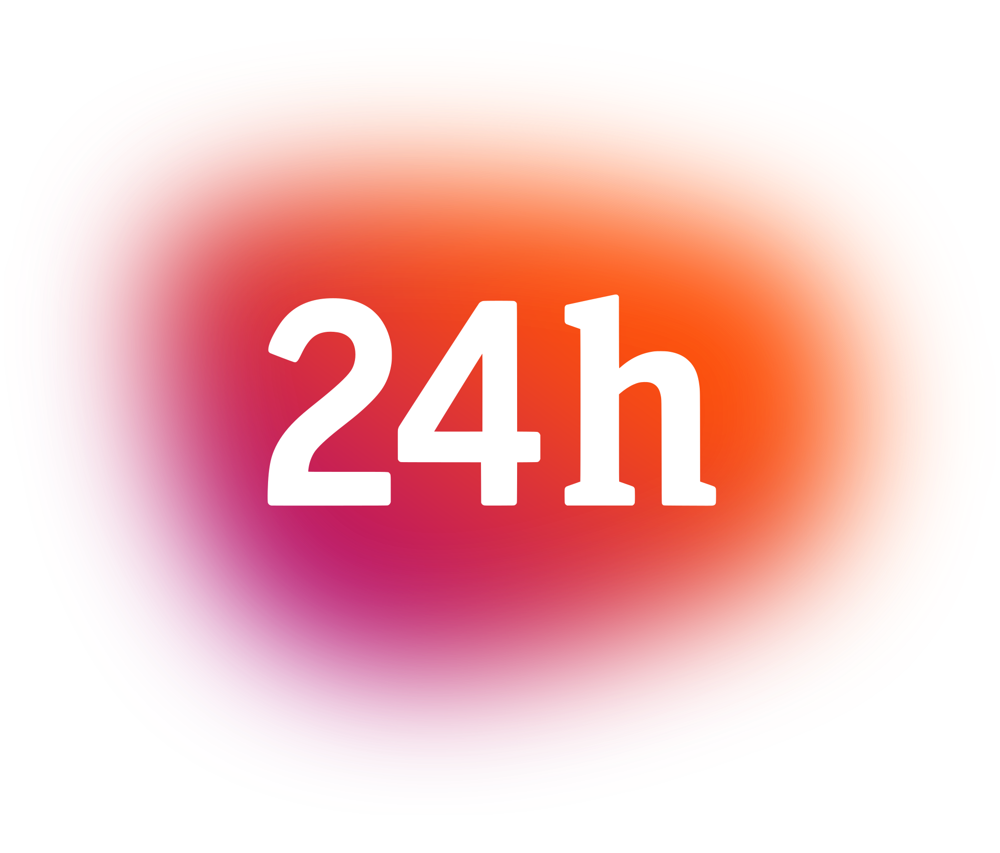
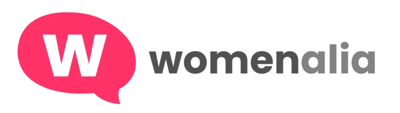

Mi intervención en televisión española sobre la maleta invisible que carga toda familia expatriada: lo que se deja atrás, lo que se sostiene en silencio y lo que sí se puede elegir.



Adaptarse no consiste únicamente en encajar en un país nuevo, sino en aprender a construirte de nuevo sin perderte a ti misma. «Despegar Consciente» es el método con el que acompaño a personas y familias expatriadas a encontrar su equilibrio emocional allá donde estén.
Identificar tus valores y usarlos como brújula para tomar decisiones alineadas con quien eres.
Atravesar el duelo migratorio, las pérdidas invisibles y la montaña rusa de la adaptación.
Diseñar tu nueva vida de forma consciente, con claridad y dirección, en cada destino.


Descarga gratis la guía con la que empezar hoy tu proceso de adaptación consciente. Y si quieres profundizar, encontrarás en La maleta de la pareja expatriada todo lo que aprendí en dieciséis años acompañando a mi familia por el mundo.
Descargar gratis Ver mis libros
Soy mamá expatriada de familia numerosa. Desde 2009 he residido en diferentes países de Europa y América, junto a mi esposo e hijos.
Una persona como tú. Yo también me topé de bruces con la cara menos amable de la expatriación. Investigué y me formé en desarrollo personal hasta dar con la clave, esa pieza del puzzle que me faltaba, y conseguí disfrutar de mi vida de expatriada y, al mismo tiempo, encontrar mi verdadera vocación: poner mi experiencia al servicio de tantas otras personas que, como tú, están en la búsqueda de esa pieza clave que les haga disfrutar de su nueva vida.